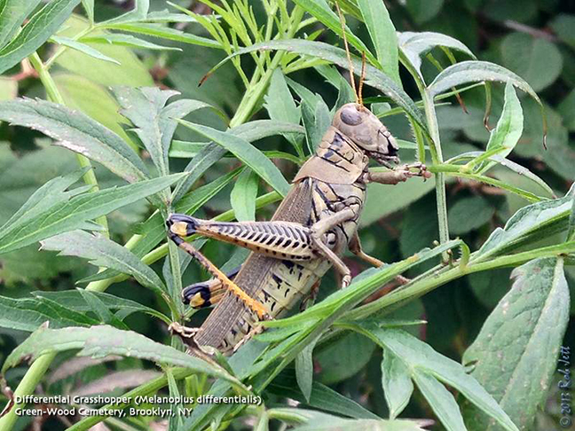
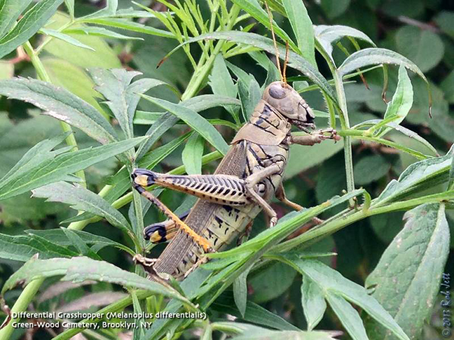

Green-Wood Cemetery is one of the best places to get your dose of cute. During the day, look up the trees to see if you can spot racoons. While pests to our suburban neighbors, New Yorkers delight in these little furry bandits — unless they’re getting into your trash cans…
Green-Wood Cemetery is home to many animals in the bird, mammal, fish, reptile and insect families.
The Birds
Green-Wood Cemetery is home to at least 216 different bird species throughout the year and serves as an excellent migratory stop over. With the many healthy trees and other flora, one could expect to see more than 40 species on a given day during peak migration in the spring and fall. Green-Wood Cemetery has an especially wide-range of sparrows and finches that gather here from fall to early spring, feeding on the many seed pods and berries.
Green-Wood would not be complete, though, without mention of the huge Quaker Parrot colony that lives here. Having built their funnel shaped twig nests into the main entrance of the cemetery, you can’t miss these noisy, bright green revelers painting the sky above you.
Finally — highly elusive and still quite rare for Brooklyn — at least two Great-Horned Owls have been living in Green-Wood Cemetery for quite some time now. While incredibly difficult to find, check in the inner trunks of pine and other coniferous trees to possibly see these elusive beauties. Great-Horned Owls and all owls are easiest seen in the winter when the landscape is more barren, however, keep in mind that owls and all birds are sensitive, nervous animals that you should never harass, stalk, or follow, lest you potentially put the birds and yourself in danger.
And The Bees
You can stand in a secluded spot near the 39th Street border and hear birds chattering away, with only the occasional trains from the nearby subway station and airplanes flying low overhead to remind you that you’re still in the city. And then, if you listen carefully, you may notice a slight buzzing underneath it all. Because, amid Civil War soldier gravestones and much more recent monuments, stand six beehives. The newest residents of Green-Wood are creating a lot of buzz — the cemetery recently started keeping bees, and has six hives on the property, with hopes of selling the honey they create at their future gift shop. There’s no reason to be afraid of these little guys — just be sure to give them their space if you spot them hard at work.
Water Life Abounds
Turtles, frogs, and even snakes also call Green-Wood Cemetery home. Walk slowly along the many ponds and you’re very likely to see American Bull Frogs, Painted Turtles, and Red-Eared Slider Turtles.
There have also been reports of Garter Snakes and Black Racer snakes at Green-Wood. These small snakes are absolutely harmless and move quickly and inconspicuously, so you would be lucky to see them.
Some of the mammals you may see are voles, white-footed mice, both black and gray squirrels, rabbits, and woodchucks (woodchucks are small-dog-sized rodents that are far more common to Brooklyn than you might think, and Green-Wood is one of the best places to see one).
Batty for Bats
Few realize that NYC is home to many bats, since we’re rarely in parks at night. However, some species of bats will show themselves in the day time. Green-Wood Cemetery, with its multitude of excellent hiding places, is probably one of the best locations in Brooklyn to see them.
Most often we’re seeing Little Brown Bats, however, New York is home to nine different species. Walking along the perimeter of Green-Wood at night (the grounds themselves are closed) in the summer, you’re likely to see the many bats feeding off pesky insects. Bats are pretty remarkable animals. They are the only truly flying mammal and are able to locate their prey using sonar-like systems.
Beautiful Butterflies
Green-Wood Cemetery is filled with butterflies in late summer! From the tiny Eastern Tailed Blue to the large, almost bird sized Tiger Swallowtail, the Cemetery is one of the best places to view a large variety of butterflies.
Look for them along grave hedges on bright warm days, and remember to leave those beautiful flowers where they are so the butterflies can keep feeding. In order to best view butterflies, a set of binoculars is helpful, as is remembering to not let your shadow cross over them. Butterflies have no real defense besides fleeing, and they will instinctually bolt should they detect sudden darkness.
Respect Our Animal Friends
When viewing wildlife at Green-Wood Cemetery remember to give all animals their right to space, safety, and preservation. Not only is it less stressful for the animals, it’s much easier to view them. Green-Wood Cemetery remains an active cemetery, and while extraordinarily popular to use binoculars and cameras within the grounds, remember to remain respectful and aware that people may be paying their respects around you.
Green-Wood Cemetery is one of many essential wild spots in Brooklyn and can provide an incredibly rewarding day of nature blended with history. See what you can find the next time you visit!